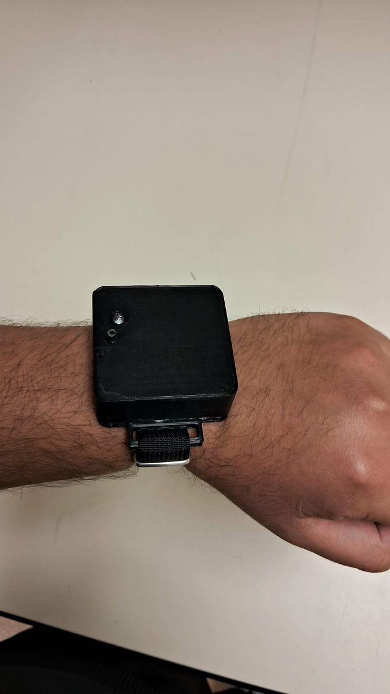

Haptic Focus Assistant
A BLE wrist wearable that interrupts phone distraction with a buzz instead of a block. App blockers are rigid and easy to bypass; this takes the opposite approach — a Kotlin Android app watches foreground app usage through UsageStatsManager, and the moment a flagged app opens it fires a BLE GATT write to the band, which answers with a 4 kHz siren, a pulsing coin motor, and a blinking red LED. You feel the habit instead of being locked out of it.
On the wearable side, a XIAO ESP32-C3 runs a four-state machine — idle, connected, alerting, cooldown — driving an ERM coin motor through a 2N2222 BJT and a piezo buzzer in push-pull off two GPIO pins. Two problems shaped the final design: the BS170 MOSFET I specified first wouldn't saturate at a 3.3 V gate, so the motor heated without turning until I swapped in the BJT; and the blue LED channel had to be dropped from firmware because D0 sits on an ESP32-C3 strapping pin that's pulled high during boot. Driving the buzzer push-pull doubled the swing to 6.6 Vpp without adding a driver transistor at all.
Board captured in KiCad 10.0 and milled in-house on the UTA EE lab's Bantam Tools mill — remilled twice to correct header drill sizing and a button footprint. The 3D-printed enclosure was finished but the internal cavity wouldn't take the full PCB, battery, and charger stack, so it was demoed bare. That's the first thing I'd redo.
View on GitHub
The assembled band — 3D-printed housing with RGB status LED and reset button.